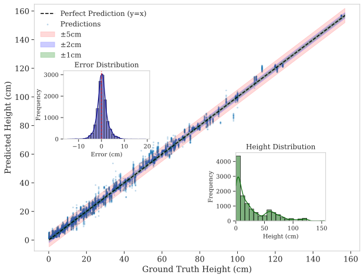
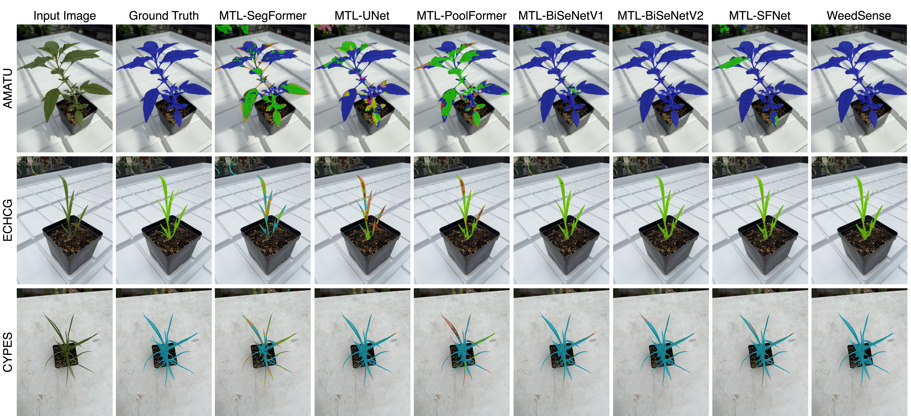

- Dual-path UIB Encoder: Combines a Detail Branch for fine-grained spatial features with a Semantic Branch using Universal Inverted Bottleneck blocks for efficient context extraction.
- Multi-Task Bifurcated Decoder: Enables joint learning of semantic segmentation, height regression, and growth stage classification in a unified framework.
- Temporal Growth Decoder: Leverages transformer-based feature fusion with multi-head self-attention to capture complex relationships between visual features and growth attributes.
- Comprehensive Dataset: 120,341 annotated images across 16 weed species, 11-week growth cycle with pixel-level masks, height measurements, and temporal labels.
Results
Segmentation
mIoU: 89.78% mF1: 94.54%
Height Estimation
MAE: 1.67 cm RMSE: 2.32 cm R²: 0.9941
Growth Stage Classification
Accuracy: 99.99% F1: 99.99%
Height Estimation Performance

Height estimation performance across the full measurement range (0.2-155 cm). Predictions cluster tightly along the perfect prediction line (y=x) with tolerance bands showing ±1cm, ±2cm, and ±5cm accuracy zones. The error distribution shows symmetric behavior around zero with no systematic bias.
Attention Activation Maps

Visualization of attention activation maps from the aggregation layer. Each task displays distinct activation patterns: segmentation shows uniform boundary-focused activation, height estimation concentrates on plant extremities, and growth stage classification focuses on stem and mature leaf regions containing temporal growth indicators.
Qualitative Comparisons

Visual comparison of weed segmentation across different methods. WeedSense provides more accurate boundary delineation and better precision for fine-grained plant structures compared to baseline methods.